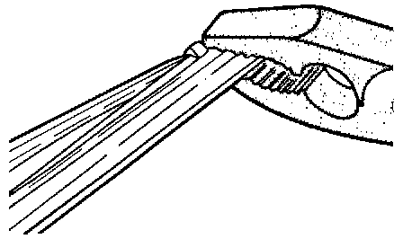
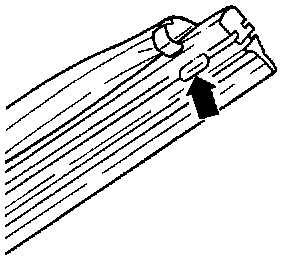

Wiper Blade: Service and Repair
Removing Rubber Wiper Inserts:
- Squeeze metal strips together at open end of rubber insert using pliers.
- Remove rubber insert from upper retaining clip.
- Slide rubber insert from other clips of wiper blade.
- Remove metal strips from rubber.
Installing
- Install metal strips into upper grooves of new rubber insert.
NOTE: Notches in metal strips must face rubber and engage rubber lugs in groove.
- Slide rubber insert into lower clips of wiper blade.
- Squeeze metal strips at open end of rubber insert using pliers.

- Install rubber insert into clip so that clip engages rubber retaining slot (arrow).